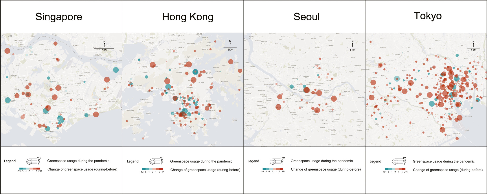
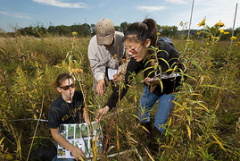

社会科学实验研究方法
从原理到实践
2023-08-13
实验法目标问题


实验法核心逻辑
反事实模型/潜在结果模型
- Potential outcome model
- Neyman-Rubin Causality Model (RCM, Splawa-Neyman, Dabrowska, and Speed 1923; Rubin 1990)

因果推断的圣杯
RCM的强悍之处
- 因果律 → 单一因素因果效果;
- 定义了因果关系;
- 使因果关系可见、可测。
实验甚至成为了“科学”的象征

当“人生不售来回票”
一种妥协：个体 → 群体

因果推断的圣杯
(But) 三维动物的权益之计
为什么实验要包含随机
寻找“最相近的两组”

实验设计
按干预形式分：

按实验环境分：


衡量实验（及其他研究）的标准
效度（Validity）：推断与真实的接近程度。

- 与研究目的的接近程度——内部效度
- 与广泛人群的接近程度——外部效度
实验结果（Average Treatment Effect, ATE）

行为（心理混合）实验
Tip
信任博弈（Trust Game）:
- 玩家A（信任者）： 玩家A首先收到一定数量的货币单位（例如10元）。然后，他们可以选择将其中的一部分或全部交给玩家B。交给玩家B的金额将乘以一个系数（例如3），从而增加总金额。
- 玩家B（受托人）： 玩家B接收到乘以系数后的金额，并可以选择将其中的一部分或全部归还给玩家A。
- 结果： 游戏的结果揭示了玩家A对玩家B的信任程度，以及玩家B对这种信任的回应。
Hu (2020): 改良变语匹配实验 +（半）信任博弈测量


感谢关注，欢迎交流

参考文献
Bassi, Anna, Rebecca B. Morton, and Kenneth C. Williams. 2011. “The Effects of Identities, Incentives, and Information on Voting.” The Journal of Politics 73 (2): 558–71.
Chang, Andrew, and Phillip Li. 2015. “Is Economics Research Replicable? Sixty Published Papers from Thirteen Journals Say ’Usually Not’.” Finance and Economics Discussion Series 7: 1–25. http://dx.doi.org/10.17016/FEDS.2015.083.
Egas, Martijn, and Arno Riedl. 2008. “The Economics of Altruistic Punishment and the Maintenance of Cooperation.” Proceedings of the Royal Society of London B: Biological Sciences 275 (1637): 871–78.
Gosnell, Harold F. 1926. “An Experiment in the Stimulation of Voting.” American Political Science Review 20 (4): 869–74. https://doi.org/10.2307/1945435.
Green, Donald P., and Alan S. Gerber. 2019. Get Out the Vote: How to Increase Voter Turnout. Brookings Institution Press. https://books.google.com?id=lPlyDwAAQBAJ.
Hu, Yue. 2020. “Culture Marker Versus Authority Marker: How Do Language Attitudes Affect Political Trust?” Political Psychology 41 (4): 699–716. https://doi.org/10.1111/pops.12646.
Kam, Cindy D., Jennifer R. Wilking, and Elizabeth J. Zechmeister. 2007. “Beyond the ’Narrow Data Base’: Another Convenience Sample for Experimental Research.” Political Behavior 29 (4): 415–40.
Lu, Yi, Jianting Zhao, Xueying Wu, and Siu Ming Lo. 2021. “Escaping to Nature During a Pandemic: A Natural Experiment in Asian Cities During the COVID-19 Pandemic with Big Social Media Data.” Science of The Total Environment 777 (July): 146092. https://doi.org/10.1016/j.scitotenv.2021.146092.
Morgan, Kari Lock, and Donald B. Rubin. 2012. “Rerandomization to Improve Covariate Balance in Experiments.” The Annals of Statistics 40 (2): 1263–82.
Open Science Collaboration. 2015. “Estimating the Reproducibility of Psychological Science.” Science 349 (6251): aac4716.
Rubin, Donald B. 1990. “Comment: Neyman (1923) and Causal Inference in Experiments and Observational Studies.” Statistical Science 5 (4): 472–80.
Solt, Frederick, Yue Hu, Kevan Hudson, Jungmin Song, and Dong "Erico" Yu. 2017. “Economic Inequality and Class Consciousness.” The Journal of Politics 79 (3, 3): 1079–83. https://doi.org/10.1086/690971.
Splawa-Neyman, Jerzy, Dorota M. Dabrowska, and T. P. Speed. 1923. “On the Application of Probability Theory to Agricultural Experiments. Essay on Principles. Section 9.” Statistical Science, 465–72.
Tai, Yuehong ‘Cassandra’, Yue Hu, and Frederick Solt. 2022. “Democracy, Public Support, and Measurement Uncertainty.” American Political Science Review, May, First View. https://doi.org/10.1017/S0003055422000429.
Tang, Wenfang, and Yue Hu. 2022. “Detecting Grassroots Bribery and Its Sources in China: A Survey Experimental Approach.” Journal of Contemporary China 32 (140): 207–24. https://doi.org/10.1080/10670564.2022.2071883.
胡悦. 2021. “实验室实验：政治科学研究的一种有效方法?” 国外理论动态, no. 06: 160–71. https://kns.cnki.net/kcms/detail/detail.aspx?dbcode=CJFD&dbname=CJFDAUTO&filename=GWLD202106020&uniplatform=NZKPT&v=PJYfzUdELnpV-fTfaz1qhlzXK-PBjlfPmQ9ieLN3AwtLHnQA7zFItljLs4eCH3va.